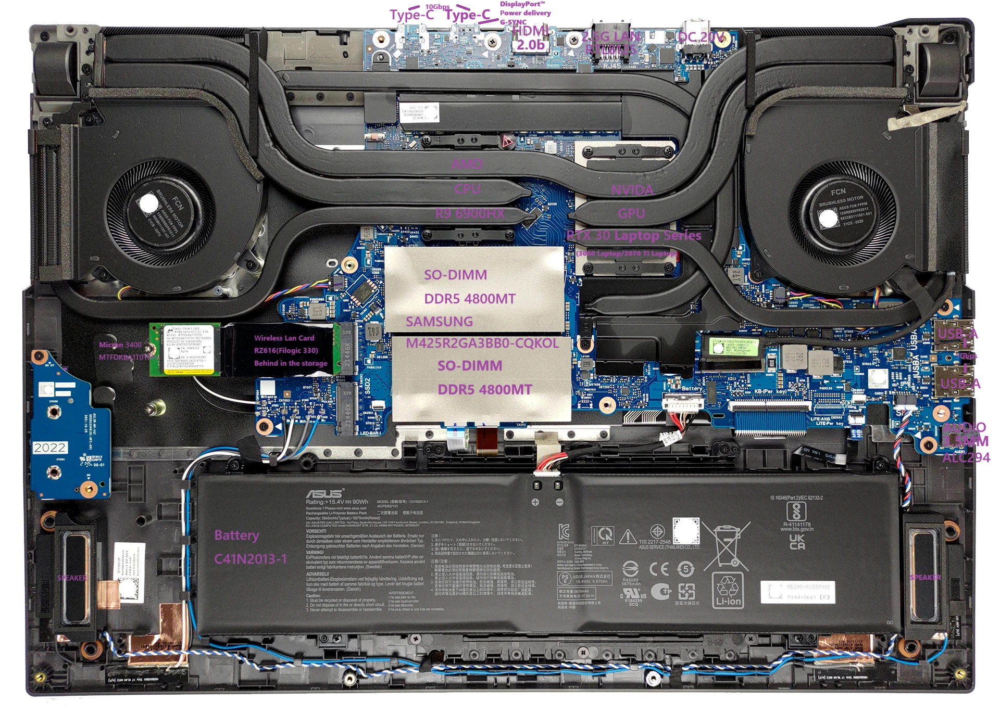
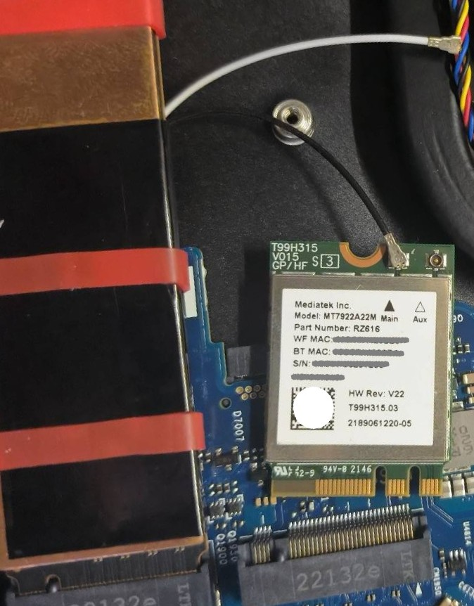
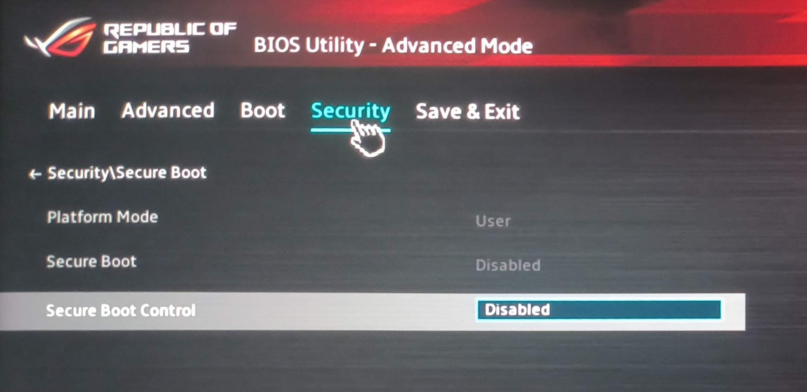
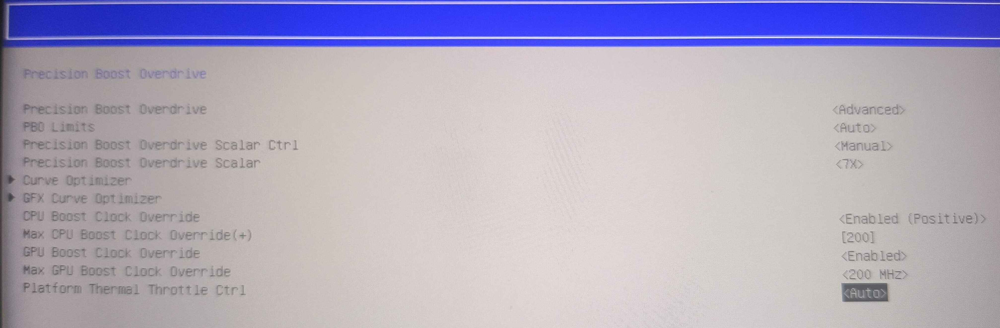
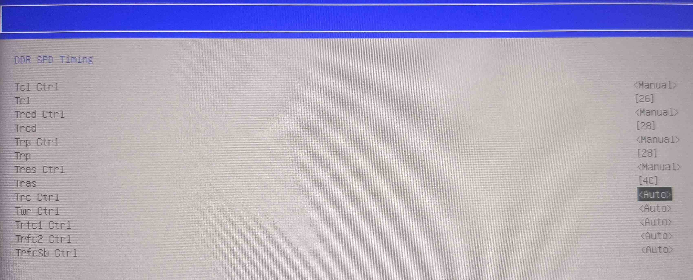
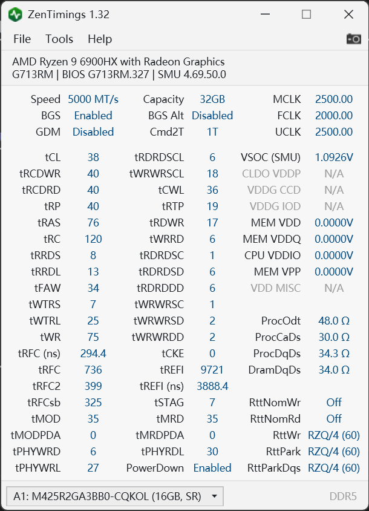
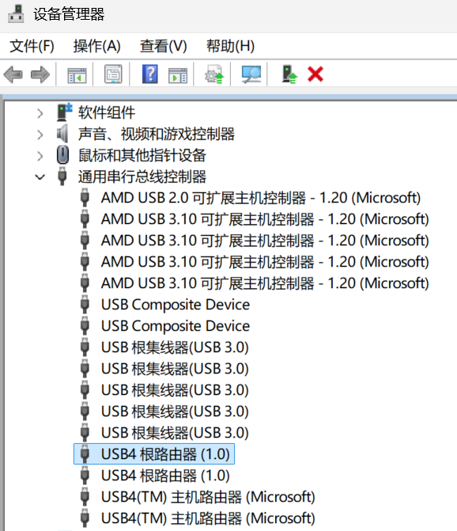

华硕ROG魔霸6P超频探索
基本配置介绍
魔霸6P，其国际版是 Strix G17 2022，内部型号 G713R
其中 RM 是采用 RTX 3060 Laptop GPU 的版本,RW 是采用 RTX 3070 Ti Laptop GPU 的版本
CPU：AMD Ryzen 9 6900HX @3.3GHz
GPU：NVIDIA GeForce RTX 30 series Laptop GPU
RAM：32GB Samsung DDR5 BDie 4800MHz(16GB x2, China Edition using 16GB x1)
SSD：1TB Micron 3400 PCIe4.0 NVMe SSD
WiFi：Mediatek RZ616 MT7922 802.11ax WiFi 6E(Built-in Bluetooth 5.0)
OS：Windows 11 Pro 21H2(China Edition using Family Pack)
LAN：Realtek RTL8125 2.5GbE
Sound：Realtek ALC294

ASUS ROG Strix G17 G713R (2022) review
ROG Strix G17 (2022) G713
找不到声卡的详细信息，根据命名应该是个双声道中高端声卡，反正也就听个响而已，但是插上耳机也还可以，马马虎虎。
内存上的白色贴片不是用于散热的，是一种EMI滤波材料，用来滤波的。
并且 左侧那块空白 PCB 原先应该是用于 NFC 的，这在 Strix Scar 2022 上是有的，但是在魔霸6P上没有，所以就空着了。可能有一定固定的作用，但有固定的作用不太可能，所以你可以丢了省点重量和空间。
如果你会画 PCB 的话，你其实可以制作一个网卡延长板，利用那块没有利用的空白 PCB 的位置，改变网卡位置，以便于散热，提高网卡性能以及稳定性。（或者是延长硬盘M.2的位置，但是这种高速设备并不太好处理）
可以看到电池左侧其实是有大片空间的，但是并没有利用上，可能是为了符合某些标准，也可能是通用配件节省成本的原因。
这块 PCB 其实和国内的魔霸新锐是一样的，不过本机设计17寸的，新锐设计15寸的，其实到具体操作上就是把壳延长，散热器也延长了，15寸的取消了小键盘，其他的都没有变化。
另外电源适配器也有差别，3060的版本是 240W，3070Ti 的版本是 280W，3060 的版本是 20V 12A，3070Ti 的版本是 20V 14A。
屏幕采用 BOE NE173QHM-NZ2 240Hz的屏幕，分辨率是2560x1440，外版还有一个版本是360Hz的屏幕，分辨率是1080p。
硬盘的话建议换一个位置，原先的位置网卡叠叠乐，又是美光3400这块硬盘，美国自研主控，性能一般，发热也大，加上一个铜片散热，原先位置最好上无缓存的硬盘，然后在系统里把 ASPM 打开，有效控制硬盘温度。最好的方法是直接卖了，然后上两块三星990系列（推荐EVO或EVO PLUS）的硬盘。

很多人说这个网卡是个垃圾，其实很不错，是因为散热不好，导致性能不稳定，发热过高，实际如果放在台式机上，个人感觉和英特尔的 AX210 差不多，甚至更好一些。以及说硬盘要用扎带绑起来，不能用皮筋什么的，这完全是杞人忧天了，我敢说，这个皮筋的质量能用5年都没问题
关于系统，在国内的版本是 Windows 11 家庭版，国际版是 Windows 11 专业版，硬盘里有一个隐藏分区，里面是系统的恢复分区，存在一个swm的恢复文件，这个备份起来（以及自带的EFI分区 ），其他的都可以删掉（直接删除所有分区），官方自带的系统魔改过，不可靠，建议直接安装23H2以上的系统（微软官网下载即可），等待系统更新自动安装好相关驱动，如果奥创的驱动安装不上，使用 DISM++ 提取原版系统的驱动，安装 Ghelper 进行设备管理。注意，使用 GHelper 后，无法使用 IntelliGo 音频降噪。
关于屏幕校色，在原版系统中，存在一个 G713RM_10DE_E5090A69_CMDEF.icm 以及 PQConfig.dv文件，这个是屏幕的校色文件，重新安装系统后，这些是没有的，注意备份后重新导入，不然杜比视界以及相关校色将失效。直接备份整个文件夹就可以了 C:\Windows\System32\spool\drivers\color。
玩家国度-魔霸6p-超频探索
之前就使用将内存简单调到了5000MT/s，但是并没有进行进一步的调整
这次遇到奇怪的问题，重置了BIOS之后，所以重新进行一次配置
工具 UniversalAMDFormBrowser
前置准备-关闭安全启动

Github上有个Ventoy版本的UMAF，无需关闭安全启动，直接使用即可
不开机了怎么办
正确解决方法应该是长按电源间关机，然后长按Ctrl+home+电源键，一直按不松手，直到所有指示灯全灭，然后松开所有按键，之后键盘灯会亮，然后键盘灯连闪三次就会开机了。
PBO

这个页面下有 Curve Optimizer，可以调整核心的电压，我调整到了 -10，其实可以更低，但是我没有测试
另外降压可以通过软件进行，比如 Ghelper，这样更安全
DDR Timing

这个是适合双内存 5000MT/s 的设置
注意这使用的是 16进制，所以 38(10)=26(16)以此类推

此外，在另一个页面(infinity fabric frequency and dividers)，还有一个设置
用于调试 infinity fabric 频率，这个频率是与 FCLK 一致的
原本的 auto 默认是 1800 MHz，但是我调整到了 2000 MHz，这个是可以通过 tm5 进行测试的
有关内存，还可以关闭 power down mode，这个是在另一个页面(AMD CBS)的，可以减少延迟
但是因为我有时需要使用电池，所以并没有关闭
电压
电压只有少数几个可以调整的选项
主要是 VDD_MEM VDD_IO VDD_DIMM
这几个有关内存的电压，我没有调整，因为我是三星的内存(4800MT/s@c40)，并没有超频潜力，我尝试过了，三星的极限是 5400MT/s，此时延迟颇高，且不可过 tm5，效能不如 5000MT/s@c38(此时仍然是1.1v电压)
对了，这个三星内存的编号还有说法
DDR5 后缀2位：0L和0D 是代表PMIC（电源管理IC）不同，0L是三星自己S2FPC01，0D是IDT（瑞萨收购）P8911， 三星PMIC相对稳定，P8911超频性能会好，国际大厂都有在用，hynix ddr5 也用这颗P8911
如果是海力士 a/m die，可以尝试调整电压，据说可以达到 6000MT/s@c30
iGPU
这个在 PBO 里面，可以调整 iGPU 的频率，最高可以 boost 200MHz，另外在 AMD CBS -> NBIO -> GFX 里面，还有一个选项可以调整 iGPU 的显存，最高可以调整到 16GB
一些网友反应，很多 AMD 笔记本使用 EDGE 看视频会卡顿，这个是因为 iGPU 的显存不足（很多厂商设定是 AUTO，或者是512MB），可以尝试调整到 2GB 以上，或者在 AMD Radeon Software 里面调整 性能 -> 调整 -> 系统 -> 内存优化器 -> 游戏，但是很多机器并不会生效，所以还是在 BIOS 里面调整比较好
当然，也可能是超频把驱动超坏了，可以尝试重装驱动。
USB4
6800H 以上的处理器，都支持 USB4，但是很多厂商并没有开启，先安装芯片组驱动中的 USB4 CM 驱动，然后可以在 BIOS 里面开启，这个是在 AMD CBS -> FCH -> USB4
下面的选项全部改成 auto，然后保存重启，就可以使用 USB4 了。

AMD PBS 里面的 USB4 选项，其中有个 USB4 ACPI _EDP SUPPORT，这个选项描述应该在系统安装前或是 AMD USB4 CM 驱动，安装前保持关闭，安装后将会自动开启，但是似乎不起作用，无论是
Disable还是Enable，都没什么变化。
据说是有 bug，部分设备导致卡死死机，但是仍然有厂商开启了（并且没有出现 BUG），比如联想和戴尔，华硕对22款设备只有少数几款推出了测试版固件，然而时至今日，仍然没有正式版固件，这个是很遗憾的，也反映了华硕对于用户的态度。
参考
三星ddr5内存后缀参数的真正区别？
天选三超频实战
AMD 移动平台修改 BIOS 隐藏选项实现内存超频等
TOOL UniversalAMDFormBrowser
系列：龙之怒
Ghelper
踩坑
一些奇怪的问题可以看看 How-to-fix-my-laptop
莫名重置bios后，想要再次调整内存频率，发现无法调整，直接黑屏，无法开机，这个时候可以尝试长按电源键，然后长按Ctrl+home+电源键，一直按不松手，直到所有指示灯全灭，然后松开所有按键，之后键盘灯会亮，然后键盘灯连闪三次就会开机了。
但是想要恢复原先的设置，却无论如何都无法调整，直接不启动，可以发现，尽管你已经调整了设置，但并不生效
我推测应该是第一次设置时会写入完整的配置，但是之后的调整只会写入调整的部分，但 bios 逻辑中并没有对缺失的部分进行处理，导致无法启动
这个时候，该怎么办呢？
关闭 BitLocker，这个是导致无法调整的原因之一（因为安全原因，我一般都会开启 BitLocker，但是多次测试，发现 bitlocker 会影响 bios，可能是它会对boot进行校验的原因）
清除你在 bios 里面设置的密码，以及留下的资产信息和联系方式，经过测试，这个是导致无法调整的原因之一（推测是因为这个信息会被写入bios，因为即便降级再升级 bios 这个信息仍然保留，可能与配置文件的二进制地址相冲突，因为可以发现，它对字数有严格要求，而我超频的方法并非是官方支持的，在我另一台Fujitsu的设备，这些信息是不做限制的）
重置 ec 以及 bios 信息，即长按电源键，然后长按Ctrl+home+电源键，一直按不松手，直到所有指示灯全灭，然后松开所有按键，之后键盘灯会亮，然后键盘灯连闪三次就会开机了。
降级 bios，目前该设备由华硕提供的bios有两个版本，一个是 325，一个是 327。先降级到 325，然后再升级到 327
关闭快速启动，以及安全启动，然后保存重启
重新进行超频设置
- 优先进入 AMD Overclocking,设置PBO
- 一次只调整一个参数，然后保存重启，如果无法启动，就长按电源键，然后长按Ctrl+home+电源键，一直按不松手，直到所有指示灯全灭，然后松开所有按键，之后键盘灯会亮，然后键盘灯连闪三次就会开机了。
- 再调整内存频率
- 然后是FCLK频率
- 之后再调整 MCLK = UCLK
- 最后才是 iGPU 缓存区大小
之后依次开启快速启动，安全启动
此番设置，我成功将内存频率调整到了 5000MT/s@c40，上文提到超到c38，这次又不稳定了，三星内存太拉跨了，所以只能调整到c40，延迟也是很高的，但是效能还是比 4800MT/s@c40 要高，因为 infinity fabric 频率提高了，所以效能也提高了
对了，这电脑在暑期的时候，关机的时候换位置断开了 AC 电源，然后开机的时候，电源指示灯无论如何只能亮红灯了（即使充满了电），直到今日也是没有什么头绪。
对这个问题做过的尝试：
重置 CMOS
降级 bios
升级 bios
卸载 Asus System Control Interface V3 以及 Armoury Crate
重装奥创以及 MyAsus
对于重装系统，我并没有尝试，因为对于核心驱动我都删除干净再重装，在 Bios 里也无法改变，所以我认为这个问题或许是硬件问题，或许涉及更底层的东西
以及另一个事情，就是无法打开系统内有线网卡设备中的电源管理，允许该设备唤醒，我已经在 BIOS 里面打开了 PME 功能，并按照华硕的说明进行设置。
如果有人知道解决方案，请告诉我，邮件联系，谢谢！